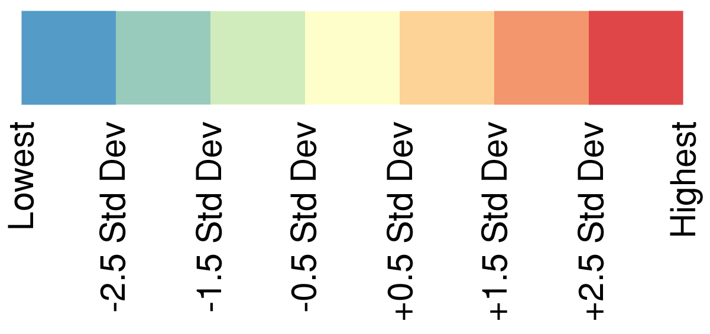

Home
Transit Travelshed FROM a Census Tract
Transit Travelshed TO a Census Tract
Transit Travelshed Index
Isochrone Generator (DCP Only)
Transit Travelshed Index
Transit Mobility
Access to Population
Access to Jobs
Access to Labor Force

Export